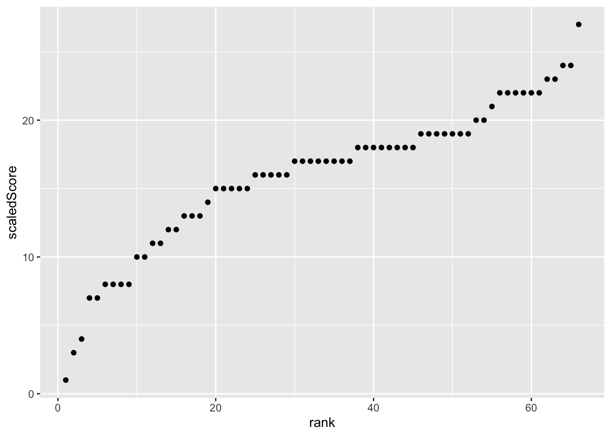
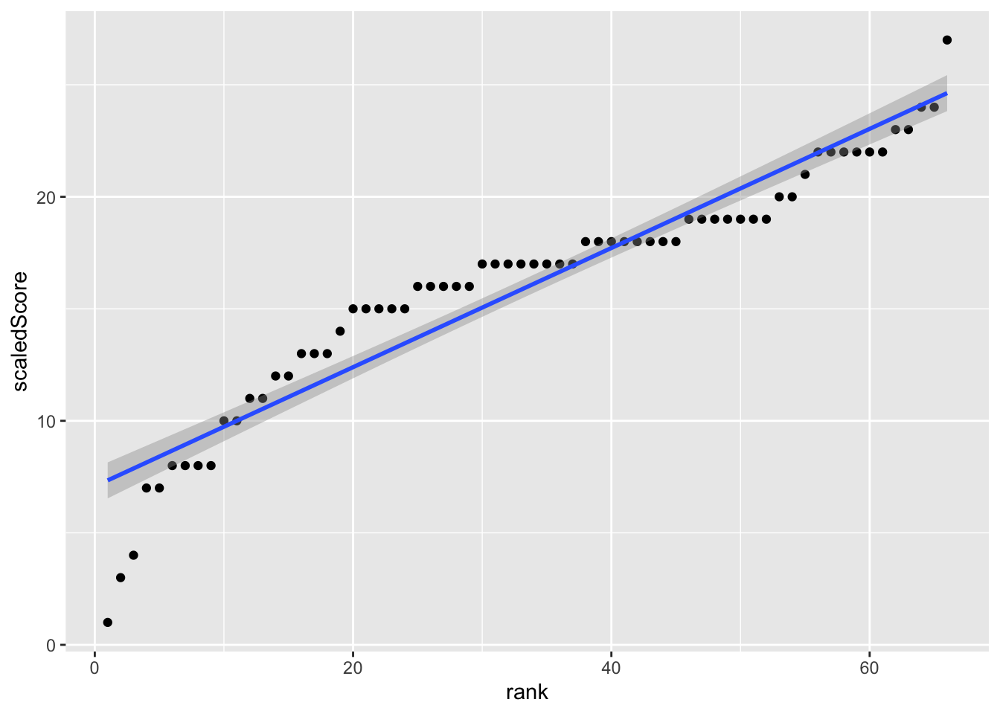
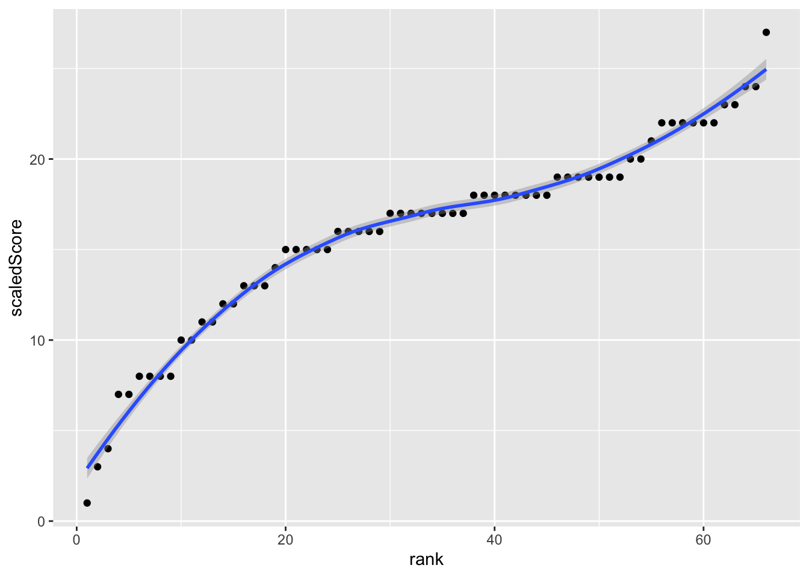
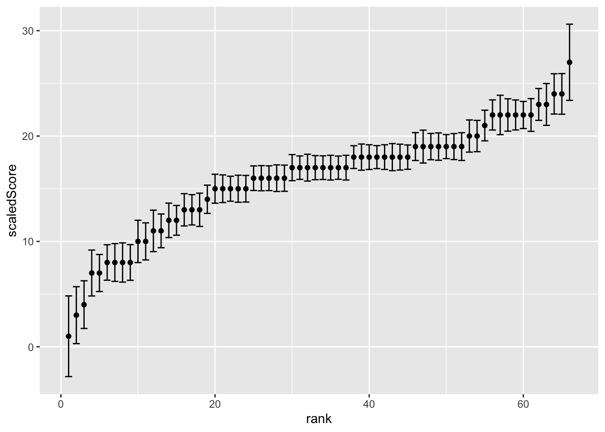

library(tidyverse)
library(nmmMongo)
connStr <- Sys.getenv("R_CONN")
task <- "9074aaa1-5353-4c7f-bc2e-22c5b18f0631"
# task <- "989c5ad8-3682-4ad8-b8ba-c47fc49cc7c8"
persons <- nmmMongo::getPersonsFromTask(task, mod=FALSE, connStr)
# glimpse(persons)
# Add a rank column to the persons data frame
persons <- persons %>% arrange(scaledScore) %>% mutate(rank = row_number())
# select the scaledScore, lowerScaled, upperScaled, and rank columns
persons <- persons %>% select(scaledScore, lowerScaled, upperScaled, rank)
# filter out any missing values in any columns
persons <- persons %>% drop_na()Ranks versus scaled scores
# Plot the rank against the scaled score
ggplot(persons, aes(x = rank, y = scaledScore)) + geom_point()
Add a linear scatter.smooth() to the plot
ggplot(persons, aes(x = rank, y = scaledScore)) + geom_point() + geom_smooth(method = "lm")`geom_smooth()` using formula = 'y ~ x'
Add a non-linear scatter.smooth() to the plot
ggplot(persons, aes(x = rank, y = scaledScore)) + geom_point() + geom_smooth(method = "loess")`geom_smooth()` using formula = 'y ~ x'
Visualise the error with upper and lower scaled scores
# Plot the rank against the scaled score with upper and lower scaled scores as vertical error bars
ggplot(persons, aes(x = rank, y = scaledScore)) + geom_point() + geom_errorbar(aes(ymin = lowerScaled, ymax = upperScaled))